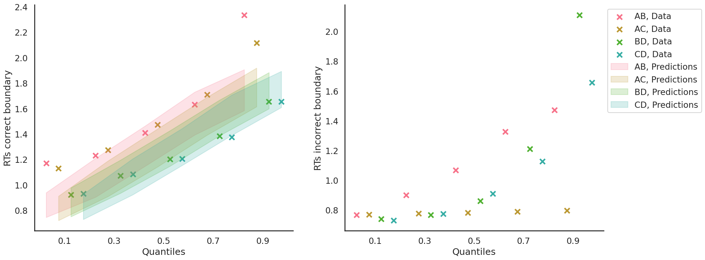
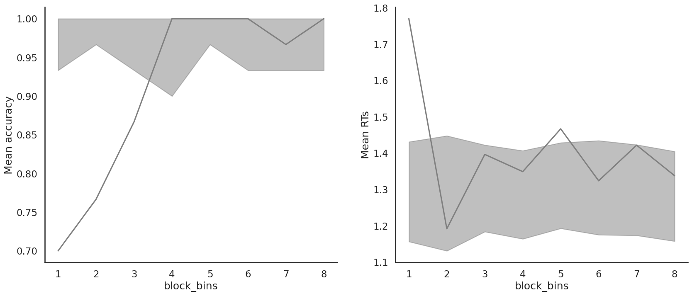

Fit the LBA on individual data
[1]:
from rlssm.utility.load_data import load_example_dataset
# import some example data:
data = load_example_dataset(hierarchical_levels=1)
data.head()
[1]:
| participant | block_label | trial_block | f_cor | f_inc | cor_option | inc_option | times_seen | rt | accuracy | feedback_type | |
|---|---|---|---|---|---|---|---|---|---|---|---|
| 0 | 23 | 1 | 1 | 39 | 33 | 2 | 1 | 1 | 1.305523 | 0 | 0 |
| 1 | 23 | 1 | 2 | 50 | 41 | 3 | 1 | 1 | 0.916909 | 1 | 0 |
| 2 | 23 | 1 | 3 | 44 | 43 | 4 | 2 | 1 | 0.737469 | 0 | 0 |
| 3 | 23 | 1 | 4 | 51 | 30 | 3 | 1 | 2 | 0.764511 | 0 | 0 |
| 4 | 23 | 1 | 5 | 62 | 48 | 4 | 3 | 2 | 0.721492 | 1 | 0 |
Initialize the model
[2]:
from rlssm.model.models_LBA import LBAModel_2A
model = LBAModel_2A(hierarchical_levels=1)
Fit
[3]:
# sampling parameters
n_warmup = 500
n_sampling = 500
n_chains = 2
n_thin = 5
[4]:
model_fit = model.fit(
data,
thin=n_thin,
iter_warmup=n_warmup,
iter_sampling=n_sampling,
chains=n_chains)
Get rhat
[5]:
model_fit.rhat
[5]:
| rhat | variable | |
|---|---|---|
| name | ||
| lp__ | 1.005480 | lp__ |
| k | 0.999161 | k |
| sp_trial_var | 1.002180 | sp_trial_var |
| ndt | 1.025830 | ndt |
| drift_cor | 0.998381 | drift_cor |
| ... | ... | ... |
| log_lik[236] | 1.001630 | log_lik[236] |
| log_lik[237] | 1.001660 | log_lik[237] |
| log_lik[238] | 1.002940 | log_lik[238] |
| log_lik[239] | 1.005290 | log_lik[239] |
| log_lik[240] | 1.003130 | log_lik[240] |
1693 rows × 2 columns
Get WAIC
[6]:
model_fit.waic
[6]:
{'lppd': -209.63929848093088,
'p_waic': 5.580290005218151,
'waic': 430.43917697229807,
'waic_se': 33.36819490491877}
Save results
[7]:
model_fit.to_pickle()
Saving file as: /home/andrei/PycharmProjects/rlssm/docs/notebooks/LBA_2A.pkl
Posteriors
[8]:
model_fit.samples.describe()
[8]:
| transf_drift_cor | transf_drift_inc | transf_k | transf_drift_variability | transf_sp_trial_var | transf_ndt | |
|---|---|---|---|---|---|---|
| count | 200.000000 | 200.000000 | 200.000000 | 200.000000 | 200.000000 | 200.000000 |
| mean | 2.047601 | 0.124005 | 0.148608 | 0.717350 | 2.524727 | 0.608417 |
| std | 0.561160 | 0.164409 | 0.176494 | 0.210643 | 0.689969 | 0.052633 |
| min | 0.848488 | 0.000002 | 0.024047 | 0.286603 | 0.995520 | 0.342565 |
| 25% | 1.652352 | 0.010144 | 0.058384 | 0.577790 | 2.036367 | 0.599223 |
| 50% | 1.973920 | 0.053954 | 0.095118 | 0.676956 | 2.458300 | 0.624702 |
| 75% | 2.365442 | 0.181870 | 0.170793 | 0.853248 | 2.872838 | 0.637649 |
| max | 3.513060 | 0.975849 | 1.623890 | 1.334370 | 4.305020 | 0.661225 |
[9]:
import seaborn as sns
sns.set(context="talk",
style="white",
palette="husl",
rc={'figure.figsize': (15, 8)})
[10]:
model_fit.plot_posteriors(height=5, show_intervals='HDI')
[10]:
<seaborn.axisgrid.FacetGrid at 0x7f0af55e0fd0>

Posterior predictives
Ungrouped
[11]:
pp = model_fit.get_posterior_predictives_df(n_posterior_predictives=100)
pp
[11]:
| variable | rt | ... | accuracy | ||||||||||||||||||
|---|---|---|---|---|---|---|---|---|---|---|---|---|---|---|---|---|---|---|---|---|---|
| trial | 1 | 2 | 3 | 4 | 5 | 6 | 7 | 8 | 9 | 10 | ... | 231 | 232 | 233 | 234 | 235 | 236 | 237 | 238 | 239 | 240 |
| sample | |||||||||||||||||||||
| 1 | 0.757644 | 1.108808 | 1.396902 | 1.775288 | 1.303536 | 1.445848 | 1.431243 | 1.281831 | 1.785029 | 1.802090 | ... | 1.0 | 1.0 | 1.0 | 1.0 | 1.0 | 1.0 | 1.0 | 1.0 | 1.0 | 1.0 |
| 2 | 0.706857 | 0.857231 | 1.133825 | 1.188797 | 0.712983 | 0.939862 | 0.778845 | 0.909787 | 1.493907 | 1.537539 | ... | 1.0 | 1.0 | 1.0 | 1.0 | 1.0 | 1.0 | 1.0 | 1.0 | 1.0 | 1.0 |
| 3 | 1.878442 | 0.890460 | 1.599073 | 1.566467 | 1.324313 | 1.196744 | 0.990333 | 1.807161 | 1.646523 | 1.046169 | ... | 1.0 | 1.0 | 1.0 | 1.0 | 0.0 | 1.0 | 1.0 | 1.0 | 1.0 | 1.0 |
| 4 | 1.077439 | 1.007013 | 1.063949 | 1.034365 | 1.034666 | 1.062056 | 0.856534 | 1.475899 | 0.837866 | 1.399693 | ... | 1.0 | 1.0 | 1.0 | 1.0 | 1.0 | 1.0 | 1.0 | 1.0 | 1.0 | 1.0 |
| 5 | 1.694413 | 1.395849 | 0.707221 | 1.643653 | 1.030164 | 0.898334 | 0.966687 | 0.793045 | 1.746848 | 1.375565 | ... | 1.0 | 1.0 | 1.0 | 1.0 | 1.0 | 1.0 | 1.0 | 1.0 | 1.0 | 1.0 |
| ... | ... | ... | ... | ... | ... | ... | ... | ... | ... | ... | ... | ... | ... | ... | ... | ... | ... | ... | ... | ... | ... |
| 96 | 0.885677 | 0.833945 | 1.593426 | 1.554544 | 0.949011 | 1.079648 | 0.994353 | 1.216335 | 1.200036 | 1.303270 | ... | 1.0 | 1.0 | 1.0 | 1.0 | 1.0 | 1.0 | 1.0 | 1.0 | 1.0 | 1.0 |
| 97 | 0.917358 | 1.154760 | 0.683646 | 1.383080 | 0.791287 | 1.721880 | 1.293904 | 1.280431 | 1.506124 | 0.979617 | ... | 1.0 | 1.0 | 1.0 | 1.0 | 1.0 | 1.0 | 1.0 | 1.0 | 1.0 | 1.0 |
| 98 | 0.770037 | 1.670640 | 1.835202 | 1.193962 | 1.479005 | 1.245409 | 1.085779 | 1.254409 | 0.967823 | 1.240168 | ... | 1.0 | 1.0 | 1.0 | 1.0 | 1.0 | 1.0 | 1.0 | 1.0 | 1.0 | 1.0 |
| 99 | 1.413931 | 1.322566 | 1.073474 | 1.365895 | 0.910407 | 0.979064 | 1.632254 | 1.797901 | 1.782589 | 0.867214 | ... | 1.0 | 1.0 | 1.0 | 1.0 | 1.0 | 1.0 | 1.0 | 1.0 | 1.0 | 1.0 |
| 100 | 1.265538 | 1.203942 | 1.132204 | 1.071142 | 1.467127 | 1.040021 | 1.480502 | 1.716082 | 1.106497 | 0.893333 | ... | 1.0 | 1.0 | 1.0 | 1.0 | 1.0 | 1.0 | 1.0 | 1.0 | 1.0 | 1.0 |
100 rows × 480 columns
[12]:
pp_summary = model_fit.get_posterior_predictives_summary(n_posterior_predictives=100)
pp_summary
[12]:
| mean_accuracy | mean_rt | skewness | quant_10_rt_incorrect | quant_30_rt_incorrect | quant_50_rt_incorrect | quant_70_rt_incorrect | quant_90_rt_incorrect | quant_10_rt_correct | quant_30_rt_correct | quant_50_rt_correct | quant_70_rt_correct | quant_90_rt_correct | |
|---|---|---|---|---|---|---|---|---|---|---|---|---|---|
| sample | |||||||||||||
| 1 | 1.000000 | 1.273213 | -0.032355 | NaN | NaN | NaN | NaN | NaN | 0.810937 | 1.063108 | 1.287993 | 1.497320 | 1.724954 |
| 2 | 1.000000 | 1.305921 | 0.139859 | NaN | NaN | NaN | NaN | NaN | 0.833882 | 1.073766 | 1.282428 | 1.494721 | 1.829483 |
| 3 | 0.983333 | 1.284454 | 0.011104 | 1.170285 | 1.170901 | 1.319179 | 1.469398 | 1.481663 | 0.788842 | 1.018210 | 1.287657 | 1.528789 | 1.786646 |
| 4 | 1.000000 | 1.198899 | 0.201609 | NaN | NaN | NaN | NaN | NaN | 0.775497 | 0.951485 | 1.194042 | 1.379832 | 1.665541 |
| 5 | 1.000000 | 1.195936 | 0.052867 | NaN | NaN | NaN | NaN | NaN | 0.783412 | 1.005766 | 1.199304 | 1.375862 | 1.610243 |
| ... | ... | ... | ... | ... | ... | ... | ... | ... | ... | ... | ... | ... | ... |
| 96 | 0.962500 | 1.227683 | 0.157722 | 1.049146 | 1.089346 | 1.165270 | 1.225679 | 1.453707 | 0.784871 | 0.990887 | 1.225948 | 1.438254 | 1.721084 |
| 97 | 0.979167 | 1.315878 | -0.061779 | 1.084820 | 1.151455 | 1.280836 | 1.404760 | 1.536354 | 0.781770 | 1.074440 | 1.339248 | 1.579070 | 1.840763 |
| 98 | 0.970833 | 1.295320 | 0.048601 | 1.234826 | 1.313793 | 1.481290 | 1.513085 | 1.666479 | 0.799866 | 1.020201 | 1.270688 | 1.542765 | 1.809246 |
| 99 | 0.987500 | 1.332758 | -0.087134 | 1.384044 | 1.387071 | 1.390098 | 1.425226 | 1.460355 | 0.855403 | 1.127956 | 1.336752 | 1.573803 | 1.801232 |
| 100 | 1.000000 | 1.209750 | 0.113245 | NaN | NaN | NaN | NaN | NaN | 0.753179 | 1.013163 | 1.181684 | 1.403235 | 1.681387 |
100 rows × 13 columns
[13]:
model_fit.plot_mean_posterior_predictives(n_posterior_predictives=100, figsize=(20, 8), show_intervals='HDI')
[13]:


[14]:
model_fit.plot_quantiles_posterior_predictives(n_posterior_predictives=100, kind='shades')
[14]:


Grouped
[15]:
import pandas as pd
import numpy as np
# Define new grouping variables, in this case, for the different choice pairs, but any grouping var can do
data['choice_pair'] = 'AB'
data.loc[(data.cor_option == 3) & (data.inc_option == 1), 'choice_pair'] = 'AC'
data.loc[(data.cor_option == 4) & (data.inc_option == 2), 'choice_pair'] = 'BD'
data.loc[(data.cor_option == 4) & (data.inc_option == 3), 'choice_pair'] = 'CD'
data['block_bins'] = pd.cut(data.trial_block, 8, labels=np.arange(1, 9))
[16]:
import numpy as np
[17]:
# Define new grouping variables, in this case, for the different choice pairs, but any grouping var can do
data['choice_pair'] = 'AB'
data.loc[(data.cor_option == 3) & (data.inc_option == 1), 'choice_pair'] = 'AC'
data.loc[(data.cor_option == 4) & (data.inc_option == 2), 'choice_pair'] = 'BD'
data.loc[(data.cor_option == 4) & (data.inc_option == 3), 'choice_pair'] = 'CD'
data['block_bins'] = pd.cut(data.trial_block, 8, labels=np.arange(1, 9))
[18]:
model_fit.plot_mean_grouped_posterior_predictives(grouping_vars=['block_bins'],
n_posterior_predictives=100,
figsize=(20, 8))
[18]:


[19]:
model_fit.plot_quantiles_grouped_posterior_predictives(
n_posterior_predictives=100,
grouping_var='choice_pair',
kind='shades',
quantiles=[.1, .3, .5, .7, .9])
[19]:


[20]:
model_fit.plot_mean_grouped_posterior_predictives(grouping_vars=['block_bins'],
n_posterior_predictives=100,
figsize=(20, 8));

[21]:
model_fit.plot_quantiles_grouped_posterior_predictives(
n_posterior_predictives=100,
grouping_var='choice_pair',
kind='shades',
quantiles=[.1, .3, .5, .7, .9]);